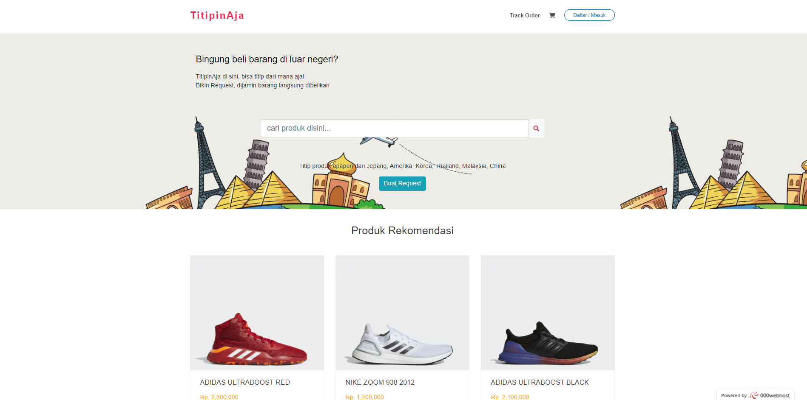
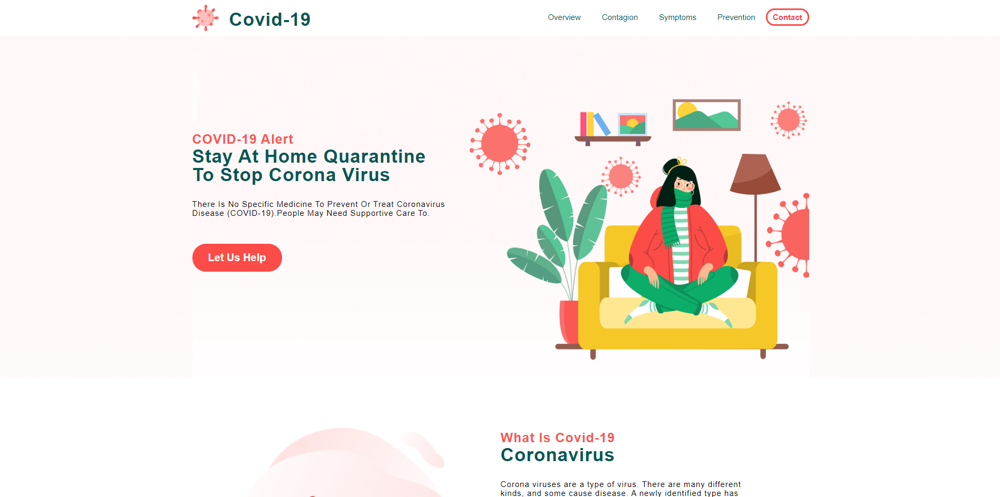
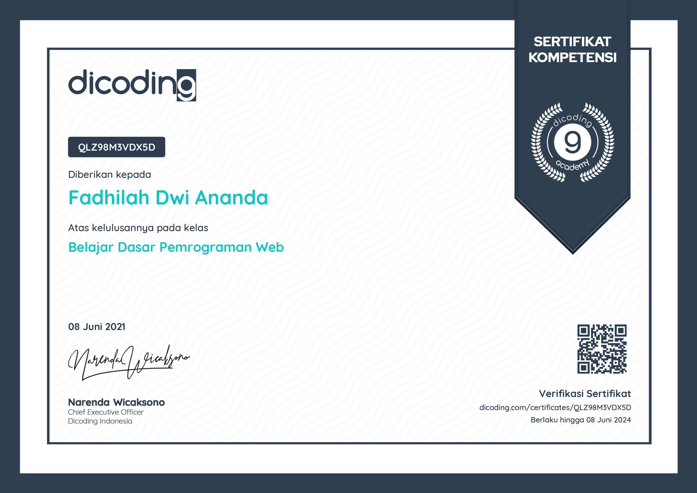
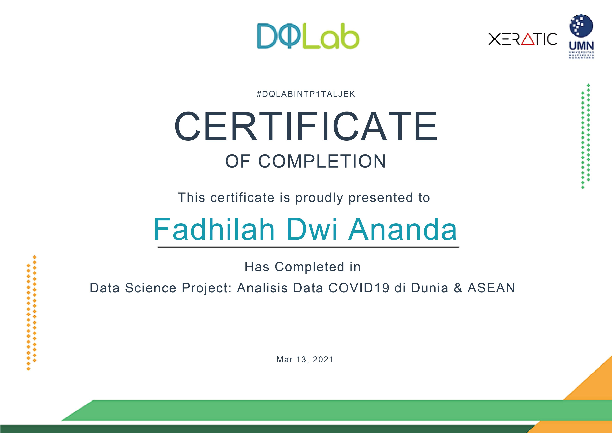
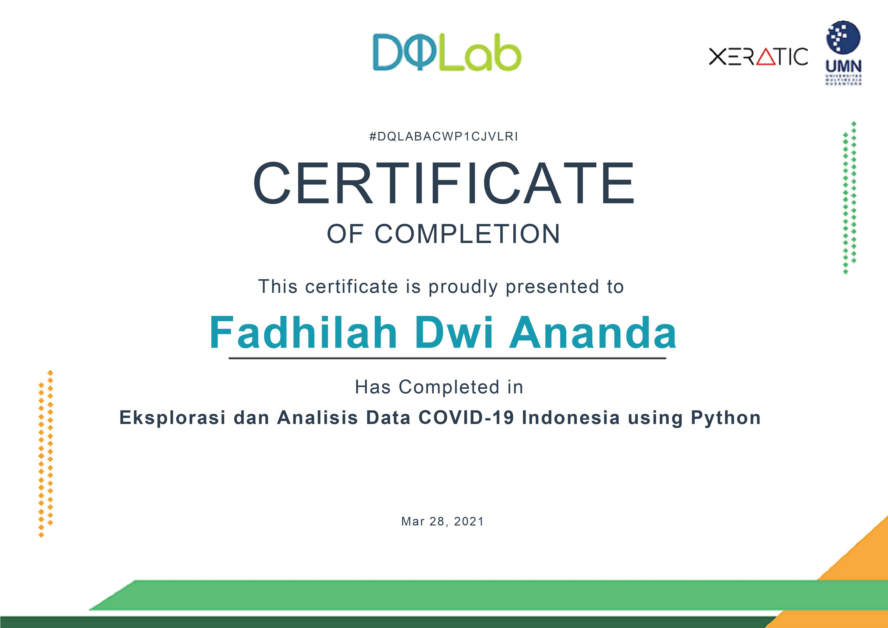

Hi, I'm Fadhilah Dwi Ananda
Front-end Developer
A frontend developer base in the area of Yogyakarta, Indonesia.

Front-end Developer
A frontend developer base in the area of Yogyakarta, Indonesia.
"Your time is limited, so don't waste it living someone else's life."
Saya adalah freshgraduate dari jurusan Informatika Universitas Amikom Yogyakarta. Saya mampu bekerja secara individu maupun berkolaborasi dengan tim, bertanggung jawab dan memiliki keinginan belajar yang tinggi. Saat ini saya berusia 21 Tahun, saya memiliki kemampuan yang dapat di andalkan yaitu Frontend Web Design, Frontend Developer, dan beberapa skill dalam bidang Analisis Data.



Website berbasis PHP Native yang dibuat menjadi web E-Commerce untuk titip jual sepatu atau titip beli sepatu.

Website yang menggunakan Flask dari bahasa pemrograman Python dengan fungsi untuk mencari tau sentimen masyarakat terhadap suatu provider internet menggunakan kecerdasan buatan dari algoritma Support Vector Machine.

Website yang menggunakan full CSS dan JavaScript yang dibuat untuk menghimbau kepada masyarakat tentang bahaya Covid-19.
Jurnal publikasi ini saya tulis berdasarkan hasil dari penelitian yang saya lakukan saat mengerjakan tugas akhir kuliah yaitu skripsi. Jurnal ini membahas tentang bagaimana cara mengetahui sentimen dari pengguna layanan internet dari provider tertentu dengan program kecerdasan buatan yang dibuat menggunakan bahasa Python dan algoritma Support Vector Machine kemudian di aplikasikan dalam bentuk website.


